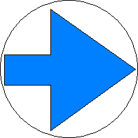

(1) Bedeutung
Kennzeichnung der Grenze der Gleisisolierung.
Signalbuch-Online
Signal Ra 13 – Isolierzeichen
Kennzeichnung der Grenze der Gleisisolierung und Hinweise zum Freihalten von Gleisen.
(2) Beschreibung
Auf weißem Grund ein blauer Pfeil.

(3)
Das Isolierzeichen gibt an, wie weit ein Gleis freizuhalten ist, damit das Umstellen von Weichen und Signalen nicht behindert wird.
(4)
Das Signal kann auch vor Zugeinwirkungsstellen von Automatik-Hilfseinschalttasten der Bü angeordnet sein.
(5) Standort
Das Signal steht rechts oder links vom Gleis. Der blaue Pfeil weist auf das zugehörige Gleis.